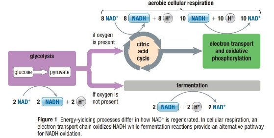
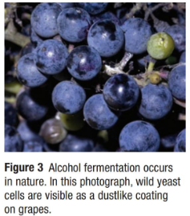
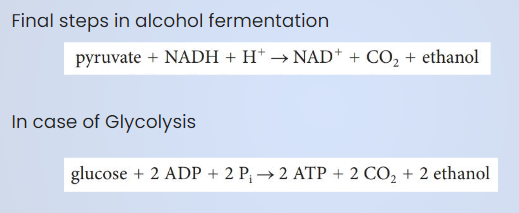

Anaerobic Pathways
Callout
ANAEROBIC PROCESSES
2 types of processes >>>> cells and organisms oxidize fuel molecules and generate ATP.
Fermentation – uses organic molecule as final electron acceptor but does not use an electron transport chain >>>> thereby fermentation not considered as a form of respiration.
Anaerobic Respiration – uses electron transport chain >>>> employs an inorganic substance other than oxygen as terminal electron acceptor.
FERMENTATION

Callout
2 forms of fermentation that eukaryotes use -
Alcohol (Ethanol) Fermentation and Lactate (Lactic Acid) Fermentation
In some organisms >>>> these pathways are the primary source of energy >>>> in other organisms >>>> these pathways are optional or supplemental sources of energy when oxygen is not available in an adequate supply
ALCOHOL FERMENTATION
A process in which pyruvate is decarboxylated, producing a molecule each of CO2 and of ethanol, and an NAD+
Alcohol fermentation (or ethanol fermentation) occurs in a variety of organisms, including certain bacteria and yeasts. The products of these final steps include a molecule of CO2, a molecule of ethanol, and an NAD+.

Can you name the yeast that bakers use to make the bread dough rise????

Did you know that over-ripening or rotting fruits often start to ferment >>>> birds that eat the fruit may become intoxicated to fly!!!!!!
FERMENTATION EFFICIENCY
Fermentation produces 2 ATP >>>> because ethanol is produced as a waste product during fermentation
Dead fish at the bottom of a deep lake >>>> potential food for an anaerobic organism
In an oxygen-rich environment >>>> organisms can survive using fermentation >>>> but will be rapidly outcompeted by any aerobic organism that is able to extract 19 times more energy from the same amount of food.
LACTATE FERMENTATION
A process in which pyruvate reacts with NADH and is converted directly into lactate and regenerates NAD+

LACTATE THRESHOLD AND OXYGEN DEBT
Lactate produced >>>> transported from the muscles to the liver >>>> oxidized back to pyruvate so that it does not build up in muscle tissue
Lactate Threshold – The point at which lactate production is too high for transport out of muscles to keep up
Lactate fermentation >>>> results in an oxygen debt >>>> by taking deeper and more frequent breaths >>>> body brings large quantities of oxygen >>>> diminish oxygen debt
ANAEROBIC RESPIRATION
Some prokaryotes have electron transport chains that use substances other than O2 as terminal electron acceptors >>>> undergo anaerobic respiration
Sulfate, SO42-; Nitrate, NO3-; and the iron ion, Fe3+ >>>> examples of some common electron acceptors
Organisms using these electron acceptors >>>> common in soils deep underground and in sediments of marshes, wetlands, and lakes